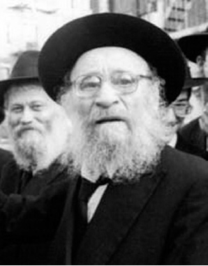

Sholom Is Mine
A brief profile of the Chassid about whom the Rebbe Rayatz said , “ Sholom is mine , ” and “ That is a Tamim ! ” * To mark his passing on 24 Kislev

At age 11 he left home and was sent to learn in Tomchei T’mimim in Ramen by R’ Itche der Masmid. After his bar mitzva R’ Itche brought him to Tomchei T’mimim in Lubavitch. He was accepted to the yeshiva without taking any test. The Rebbe Rayatz said he relied on R’ Itche.
In Lubavitch he learned with people who became his lifelong friends: R’ Zalman Shimon Dworkin, the rav of Crown Heights, R’ Nissan Nemanov, the mashpia in Tomchei T’mimim in Brunoy, and R’ Chaim Zalman Kozliner.
R’ Sholom remained in Lubavitch even after the Rebbe left for Rostov and only started his wandering a year later. In 1920, R’ Sholom was in Rostov as a talmid and then he began working in the yeshiva’s office.
“We suffered starvation but continued to learn,” he said years later.
In 5684, his father was murdered by hooligans who grabbed him and twelve other Jews on a boat returning from Homil where he had gone to buy merchandise for his store. This terrible tragedy is what made R’ Sholom resolve to leave the country with his kalla, Chaya.
The problem was that R’ Sholom did not have a passport, and in order to obtain one, he had to list his official residence. Naturally, as a yeshiva bachur who lived under the radar for many years, he could not register anywhere.
Chaya went to the police station in Homil where she tried to explain that the reason why her husband did not have official residency papers was not because he was a murderer or a thief, but because he had been in a yeshiva in a different city. It was extremely dangerous to say this in a government office, but the newlyweds had no choice. From the first office she was sent to a second office and from there to a third. When she almost despaired, she went to yet another office where a young man accepted her story and gave her the passport she needed. The couple immediately boarded a ship for Eretz Yisroel.
BECOMING A CHASSIDISHE SHOCHET
Upon arriving in Eretz Yisroel, they encountered the poverty, lack and hardship, which were the lot of those living in the Holy Land at the time. The wedding took place in Haifa and was quite different than the weddings we know of today. They barely had a minyan of people at the chuppa ceremony.
After the wedding, they lived in Balfouriya. R’ Sholom worked paving roads while his wife sold some baked goods. He wrote, describing this period, in a letter he sent to the one who later helped him when he arrived in the United States, R’ Yisroel Jacobson:
“[The Rebbe Rayatz] wrote that I should go to America and to correspond with you and with Eliyahu Yochil [Simpson] so that you can work on a visa for me and he will also write to you about this. So please make efforts in this, as much as possible. Listed here as well is the address of my paternal grandfather; please visit him and send regards, and perhaps he too can be of help in this.
“My work here is not that interesting, simple labor with a shovel and pick-axe, the main problem being that these are also lacking. I did not work for nearly the entire summer.”
A short while later, he received a letter from the Rebbe which said that it wasn’t for this, i.e. menial labor, that he was educated in Tomchei T’mimim, so he found a job as a melamed in Rishon L’Tziyon.
At that time there lived in Rishon L’Tziyon an older man who was a shochet. He wanted to retire but he felt he could not leave the settlement without kosher meat. He looked for someone G-d fearing to replace him and found R’ Sholom. He taught him sh’chita and R’ Sholom became the shochet of the moshav.
INSTRUCTIONS TO LEAVE FOR AMERICA
Throughout the years until that point, the Rebbe had told R’ Sholom a number of times to leave Eretz Yisroel and to go to the United States. R’ Sholom wrote about this to R’ Jacobson after he had already moved to Rishon L’Tziyon: “I received another letter from the Rebbe to go to America, and even though I wrote him that I am already earning enough to live sparingly and in holy work, he still told me to go to America.”
In those days, in order to receive a visa to the United States, you needed to prove that a family member who lived there was willing to take financial responsibility for you. R’ Sholom’s grandfather lived in the US and he was the one who sent the invitation to his grandson. The grandfather’s brother, who was a shoemaker, had come up with an invention for shoes and he manufactured shoes called, “Posner’s Shoes.” He became relatively wealthy and he promised to pay a stipend to his great nephew.
Upon arriving in New York, R’ Sholom’s relatives agreed to pay for his education on one condition, that he shorten his long coat a bit. R’ Sholom refused, saying: First it’s the coat, then the beard, and finally all of Judaism is cut down.
He left New York and settled in New Jersey where he became a chazan and shochet. The problem was that the monthly salary and the monthly rent were the same. Aside from working at the shul, he gave shiurim from which he earned a little more money which enabled him to buy bread for his children. There were three already when the family came to the US.
The paltry salary did not cover their expenses and R’ Sholom had to find a job. He opened a fish and chicken store. Jewish families in the area that did not want him to leave lent him $300 so he could open the business. He did not earn that much from this store, perhaps because he donated many chickens to the needy.
SHOLOM IS MINE
After a period in New Jersey, he settled in Chicago where he lived for six years and worked as a sexton in a shul. It wasn’t easy for him to live as a Chassid alone, especially in light of the terrible news coming from Europe.
When the Rebbe Rayatz moved to the US, R’ Sholom wanted to go and see him but he did not have the money to make the trip. Some of the balabatim in his community, who were relatives of R’ Avrohom Schneersohn of Kishinev, the Rebbe’s father-in-law, went to New York to meet the Rebbe Rayatz. One of them told the Rebbe that they had a shamash who was a Chabad Chassid by the name of Sholom Posner who learned in Lubavitch. He asked whether the Rebbe remembered him. The Rebbe said, “Do I remember Sholom?! Sholom is mine!”
[In a similar vein, when his son Zalman went on shlichus to France, he heard from the Chassidim who had just come out of Russia that the Rebbe said about his father, “Sholom – that is a Tamim!”]
“When my father went to the Rebbe Rayatz for the first time since his arrival in America in 1940, he told the Rebbe, ‘I am bringing my children to the Rebbe for the Rebbe to be responsible for them,’” said his son Zushe.
The children grew up quite well. Two years after that visit, the Rebbe wrote, “I had much pleasure from the dear talmidim, children of R’ S. Posner. May Hashem help them so they are diligent in their Torah and fear of heaven and may they be G-d fearing, Chassidim, and scholars. Please draw them close since they deserve kiruv.” (A number of letters in this vein were sent to Jews in Chicago. For them, it was most unusual to see yeshiva bachurim in America of those days.)
For Pesach 1942, the Rebbe instructed the secretary, R’ M. L. Rodstein, “It should be arranged for the dear talmidim, children of R’ Sholom Posner, to review Chassidus publicly in shuls of Anash and to speak in praise of the yeshiva that, thank G-d, these are its fruits with faces that shine with fear of heaven and fine character. All who see them will recognize that they are from the fruit of the vineyard planted by my illustrious father [the Rebbe Rashab].”
In Tammuz 1942, the Rebbe wrote a letter in which he urged R’ Sholom to think about what he had done to arouse the hearts of the Chassidim in his area. The Rebbe Rayatz demanded of him that “he begin in his work, from time to time, in visiting the homes of the young children of Anash and incidentally to see what is going on in the house and discuss with them about the necessity for a mezuza, a kosher kitchen …”
Once the Rebbe Rayatz arrived, R’ Sholom became “the Rebbe’s man” in Chicago. When the Rebbe wanted to know what was going on there, R’ Sholom was the one who was asked to report to him. Sometimes, this entailed not letting on to others that he was digging around to find out what was going on.
When the Rebbe arrived in Chicago on a visit in the month of Shevat, his wife cooked the Rebbe’s meals and the children would take a taxi to the hotel where the Rebbe and Rashag were staying and bring them the food.
When the Rebbe wanted to open a yeshiva in Chicago, he explained in a letter to R’ Sholom how to tell the people in the community. “Regarding the yeshiva k’tana [elementary school] all efforts must be expended for this so that, with Hashem’s help, it will come to pass. I request that you explain to them the importance of my request and tell them what you know of my work in spreading Torah, thank G-d, for over forty years, especially my involvement in this with actual self-sacrifice ever since my father, the Rebbe, before his passing, spoke to me about this. Explain to them that being true friends they need to consider my weak health, may Hashem strengthen me physically and spiritually, for this matter literally affects my health. Only this, spreading Torah with fear of heaven, is my consolation in my suffering in exile from country to country. May Hashem arouse in their hearts a positive awakening to found the yeshiva k’tana for success materially and spiritually.”
This unique letter in which the Rebbe writes about himself in such uncommon fashion provides us a glimpse into how great was the bittul of the Chassid, who from then on until his final day devoted his life to carrying out his Rebbe’s shlichus. In his final months in Chicago, he taught Gemara in the Talmud Torah in the B’nei Reuven shul, as the Rebbe instructed.
ACHEI T’MIMIM IN PITTSBURGH
In a letter that the Rebbe wrote to Agudas HaRabbanim in Pittsburgh when he sent R’ Sholom there, he described him in glowing terms, “My staunch friend, the rav and gaon, of esteemed renown, from amongst the choice talmidim of Yeshivas Tomchei T’mimim of Lubavitch, possessed of lofty talents and outstanding in his good character, master of mighty deeds to spread Torah…”
When news of his shlichus to Pittsburgh became known in Chicago, there were people who were sorry to lose this beloved Chassid. One of them, R’ Nachum Dovber Deitsch, wrote a letter to the Rebbe Rayatz and asked him not to take R’ Sholom from Chicago. The Rebbe responded that R’ Sholom’s shlichus, the place where he would be able to accomplish in spreading Torah, was in chinuch as a rosh yeshiva in Pittsburgh.
In the summer of 5703/1943, R’ Sholom arrived in Pittsburgh and was appointed menahel of the yeshiva, which was a school started a year earlier by Mordechai Dov Altein. Rashag paid the salaries from the offices of the yeshiva in New York, but R’ Sholom had to fundraise for the yeshiva and send the money back to NY so that Rashag would be able to pay his salary.
In a letter that the Rebbe wrote to him there were a number of instructions about his shlichus in Pittsburgh. He had to be careful regarding his personal dignity in speech and dress so that he could fundraise; he had to be mekarev Mordechai Dov Altein and praise him to the community for being a yeshiva bachur “made in America;” he needed to arrange farbrengens without interfering with the times that Altein is reviewing Chassidus with them, etc. The Rebbe also told him to establish an actual yeshiva and a Beis Rivka for girls.
Mordechai Dov Altein married about a year later and left Pittsburgh in order to start another yeshiva, in New Haven. Before he left, the Rebbe instructed R’ Sholom to arrange a nice reception for him that would make an impression and bring honor to the yeshiva.
R’ Sholom was in touch with the Rebbe MH”M even before he accepted the Chabad leadership. His son, R’ Zushe, remembers his father sitting with the Rebbe at a table in the southwest corner of the small zal and talking. In 5710, R’ Sholom was one of the Chassidim who immediately was mekushar to the Rebbe MH”M.
Throughout his life R’ Sholom was a model of a Chassid who lives with the Rebbe every minute of the day. That is the way it was with the Rebbe Rashab, with the Rebbe Rayatz, and with the Rebbe. Not surprisingly, when R’ Zushe recounted a story with the Rebbe and I asked, “Which Rebbe,” he said, “I don’t know, I didn’t ask.” To R’ Sholom, the Rebbe is one, ongoing essential entity.
His wife Chaya passed away in 5750 after years of being ill. The Rebbe went out to her funeral and remained standing even after the car belonging to the burial society had disappeared from view, for over twenty minutes. R’ Posner passed away on 24 Kislev 5754. He is survived by dozens of children, grandchildren, and great-grandchildren, many of whom are on shlichus around the world.
D. Levanon. "Sholom Is Mine." Beis Moshiach, no. 904 (November 26, 2013).